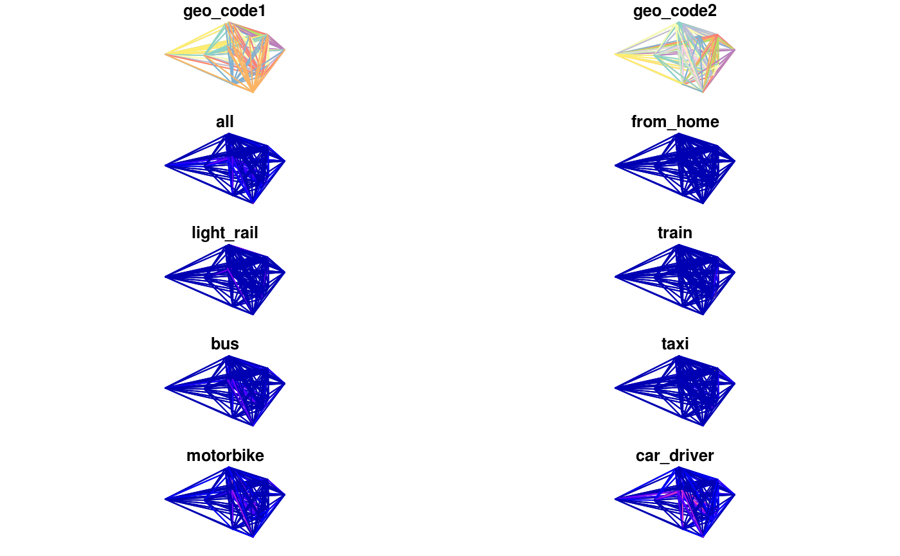

This function generates "desire lines" from census 2011 data.
By default gets all desire lines from census in region, but
can get the top n.
get_desire_lines(region = NULL, n = NULL, omit_intrazonal = FALSE)The PCT region or local authority to download data from (e.g. west-yorkshire or Leeds).
See View(pct_regions_lookup) for a full list of possible region names.
top n number of destinations with most trips in the 2011 census
within the region.
should intrazonal OD pairs be omited from result?
FALSE by default.
# \donttest{
if(curl::has_internet()) {
desire_lines = get_desire_lines("wight")
plot(desire_lines)
intra_zonal = desire_lines$geo_code1 == desire_lines$geo_code2
plot(desire_lines[intra_zonal, ])
}
#> Rows: 2402201 Columns: 14
#> ── Column specification ────────────────────────────────────────────────────────
#> Delimiter: ","
#> chr (2): Area of residence, Area of workplace
#> dbl (12): All categories: Method of travel to work, Work mainly at or from h...
#>
#> ℹ Use `spec()` to retrieve the full column specification for this data.
#> ℹ Specify the column types or set `show_col_types = FALSE` to quiet this message.
#> Rows: 7201 Columns: 6
#> ── Column specification ────────────────────────────────────────────────────────
#> Delimiter: ","
#> chr (2): MSOA11CD, MSOA11NM
#> dbl (4): BNGEAST, BNGNORTH, LONGITUDE, LATITUDE
#>
#> ℹ Use `spec()` to retrieve the full column specification for this data.
#> ℹ Specify the column types or set `show_col_types = FALSE` to quiet this message.
#> Downloading population weighted centroids
#> Rows: 7201 Columns: 6
#> ── Column specification ────────────────────────────────────────────────────────
#> Delimiter: ","
#> chr (2): MSOA11CD, MSOA11NM
#> dbl (4): BNGEAST, BNGNORTH, LONGITUDE, LATITUDE
#>
#> ℹ Use `spec()` to retrieve the full column specification for this data.
#> ℹ Specify the column types or set `show_col_types = FALSE` to quiet this message.
#> Not all flows origins have ID in centroids, removing 2527 OD pairs.
#> Warning: plotting the first 10 out of 18 attributes; use max.plot = 18 to plot all
#> Warning: plotting the first 10 out of 18 attributes; use max.plot = 18 to plot all

# }